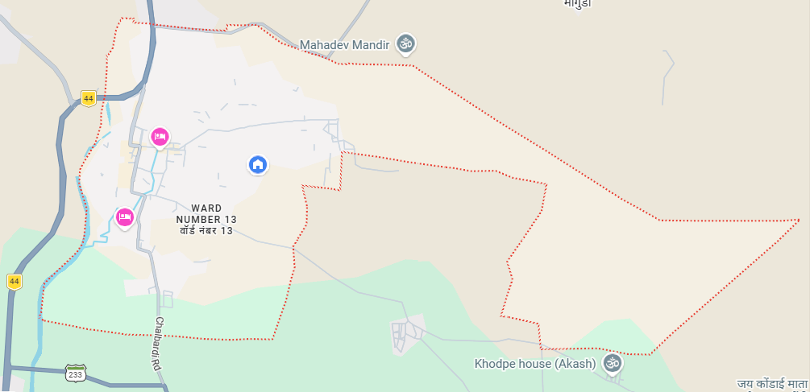
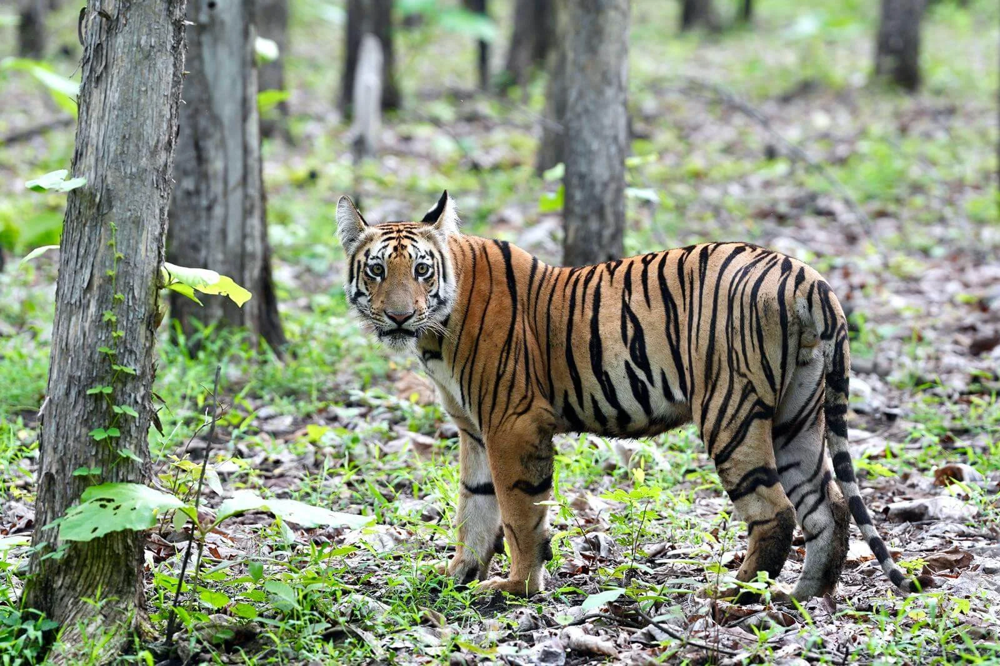
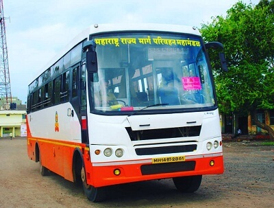
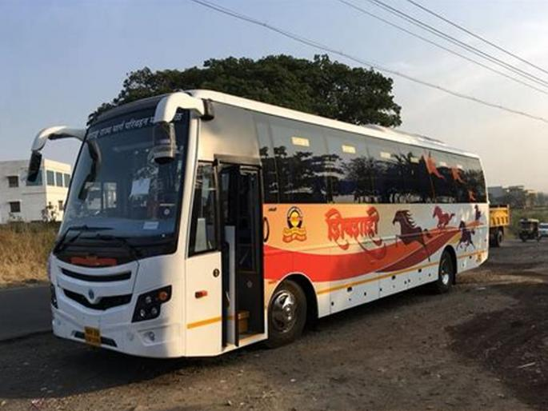
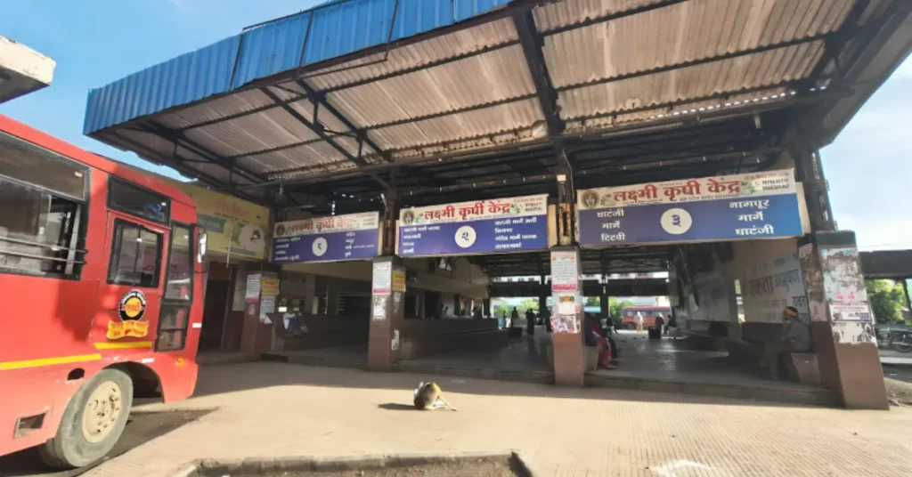

Pandharkawda is a City and a Municipal council in Yavatmal district
of the Vidarbha region in Indian state of Maharashtra.
The Pandharkawada municipality won "Best Municipality at Amravati Division"
in 2006 and a quality of education award in 2011. It is near the Saikheda Dam,
an earthfill dam on the Khuni River

Attractions
1. Kelapur Jagdamba Temple
20 km from Andhra Maharashtra border. distance and only 4 km from the well of Pandharkawda taluka. In the distance, on the important Hyderabad-Nagpur road of National Highway 7, there is a very ancient Hemadpanthi ancient temple of Mau Jagdamba in the small village of Kelapur. This Jagdamba is very sacred and every year devotees come here in large numbers from far away places in Andhra Pradesh and Vidarbha. However, this temple was neglected for years.
In 1988 Sri Jagdamba Sansthan was declared as Kelapur Public Trust and sincere efforts were made to enhance the beauty of the temple premises by planting many shady and ornamental flowers in the premises of the Sansthan. Facilities for devotees coming from far away have been provided like Bhakta Niwas / Mangalkaryalaya, Children's Park etc.
2. Tipeshwar wildlife Centuary

Tipeshwar Wildlife Sanctuary, located in Maharashtra's Yavatmal district (Pandharkawada Tehsil), is a 148.63 sq. km protected area known for its rising tiger population (approx. 20+) and low tourist density. Renowned as a "hidden gem," this dry deciduous teak forest offers excellent wildlife viewing for tigers, leopards, sloth bears, and over 180 bird species.
Best Time to Visit: April to May is ideal for tiger sightings, as the summer heat forces animals to nearby water sources.
Closure: The park is closed during the monsoon season, typically July to September.
Activities: Open-top jeep safaris are the primary activity, often guided by local trackers.
Flora & Fauna: Comprises 60% teak forest, alongside bamboo groves. It houses tigers, leopards, blue bulls (nilgai), blackbucks, wild dogs, and sambar.
Topography: Hilly and undulating terrain with several water bodies.
Location: Situated near the Telangana border. It is about 35 km from Adilabad Railway Station (Telangana) and 172 km from Nagpur Airport.
Agriculture
Kharif Crops
Jowar, Cotton, Groundnut and rice are the major kharip crops.
Jowar grows in talukas such as Pusad, Ner, Mahagaon, Umarkhed,
Maregaon, Ghatanji, Wani and Zari Jamni.
Cotton major talukas are Ghatanji, Wani, Pusad, Umarkhed, Mahagaon and Ner.
Groundnut - talukas such as Pusad, Digras, Darwha, Arni, Ghatanji etc.
Rabi Crops
Wheat and gram are the important crops. Rabi sesame and linseed (Jawas) are grown
along with these crops.
Wheat talukas lying in river basins of Wardha and Painganga. Umarkhed, Pusad, Wani,
Digras, Maregaon and Zari Jamni are the largest. Talukas such as Arni, Ghatanji and
Yavatmal also take this crop.
Gram talukas such as Umarkhed, Wani, Ralegaon, Maregaon, Pusad, Digras, Ghatanji and
Babhulgaon.
Irrigated Crops
Sugarcane, bananas, Oranges, Grapes and betel leaves are important irrigated crops.
Sugar cane Pusad, Umarkhed and Mahagaon talukas
Bananas and oranges Zadgaon, Ralegaon, Kalamb and Dabha-Pahur regions
Grapes Pusad and Umarkhed region
Betel leaves - Lalkhed, Darwha, Digras and Umarkhed region
Demogarphics
As of 2001 India census, Pandharkawada had a population of 26,567.
Males constitute 51% of the population and females 49%. Pandharkawada has
an average literacy rate of 74%, significantly higher than the national
average of 59.5%. Male literacy is at 80%, while female literacy is 68%.
In Pandharkawada, 13% of the population is under age 6.
Year
Male
Female
Total Population
Change
Religion (%)
Hindu
Muslim
Christian
Sikhs
Buddhist
Jain
Other religions and persuasions
Religion not stated
2001
13,613
12,959
26,572
-
74.616
18.745
0.181
0.467
3.793
0.884
1.291
0.023
2011
15,681
15,413
31,094
17̥%
75.622
18.991
0.154
0.322
4.039
0.746
0.090
0.035
Transport



Pandharkawada is located on National Highway 7 on Nagpur-Hyderabad section.
MSRTC buses connect the city to Nagpur, Ghatanji, Yavatmal, Chandrapur, Amravati,
Akola, Nanded, Aurangabad, Adilabad, Pune and Hyderabad.
Geography
Dense forests are found in Pandharkawada. Tipeshwar is one of the two wildlife sanctuaries
in the city and the most well-known forest of the district. Trees such as teak, bamboo,
tendu, hirda, apta and moha live in the forests. Tiger, bear, deer, nilgai, sambar,
hyena and the national bird, the peacock, are found in the forests. A suspected man
eating tigress, with 13 victims attributed was active in this area in Oct/Nov 2018
and was shot dead on November 2, 2018.